| 日付 | 2025年12月30日（火） - 2025年12月31日（水） | ||||
|---|---|---|---|---|---|
| 山域 | 近畿の山 | ||||
| メンバー | 単独 | ||||
| 山行形態 | 日帰り | ||||
| アクセス | 車 | ||||
| ルート (Map2) |
|
2日目
本日は大和葛城山～金剛山を周回して歩く予定。
水越峠駐車場に車を停める。標高400m。
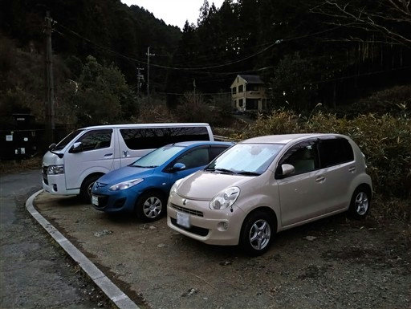
まだ6時半で、薄暗い中を歩いていく。
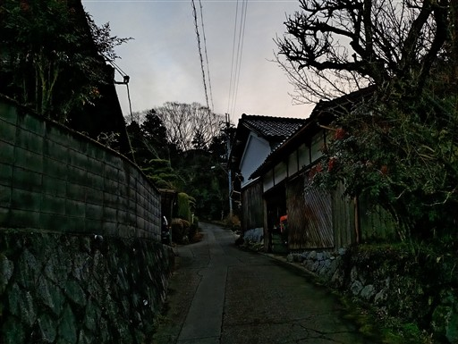
植林地帯の中に入ると一層暗くなる。
登山道は見えるが、足元の状態はよく見えない。
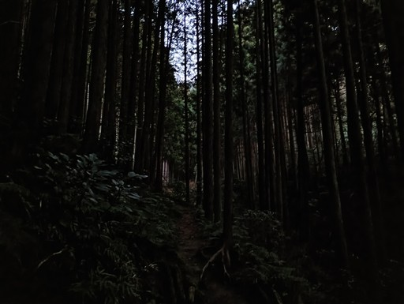
途中、沢の中を歩くところがある。思ったよりもワイルドな道だ。
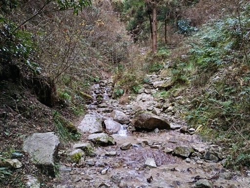
使うまでもないが、ちょっとした鎖場もある。
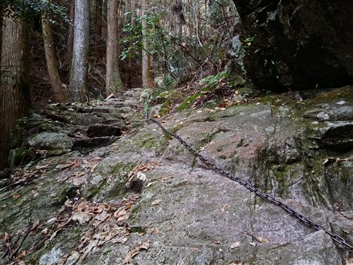
沢を離れて急斜面を登ると尾根道になる。
この辺りからは植林地帯だ。
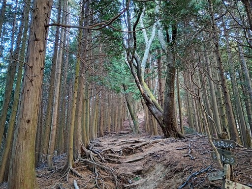
あまり見かけない形の堰堤。
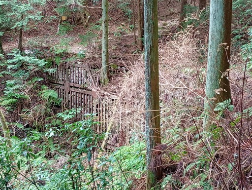
山頂直下にくると明るく開けてくる。ここはキャンプ場だろうか？
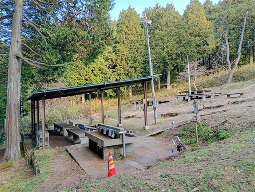
自販機まである。230円でちょっと高め。かなり観光地化された山だ。
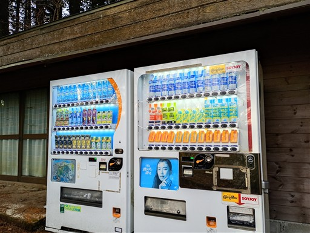
展望台から奈良盆地を見渡す。大和三山が見えている。

山頂まではあと一息。
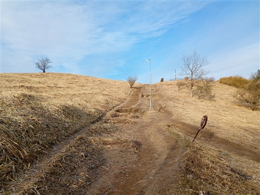
大和葛城山に到着。標高959m。
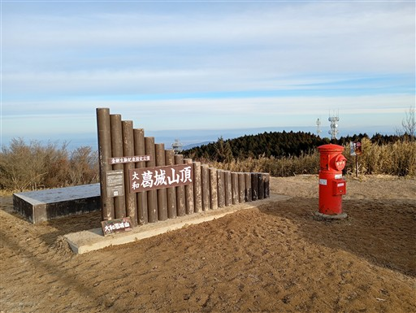
山頂には草原が広がっている。
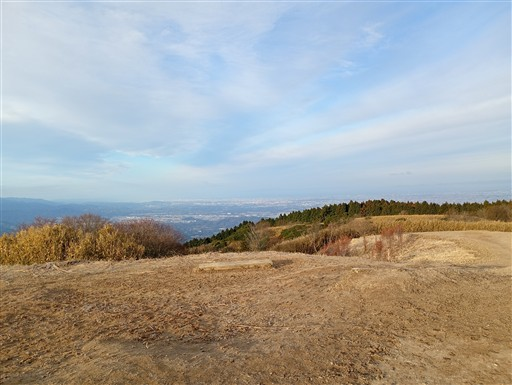
大阪方面。ビル群が見えている。
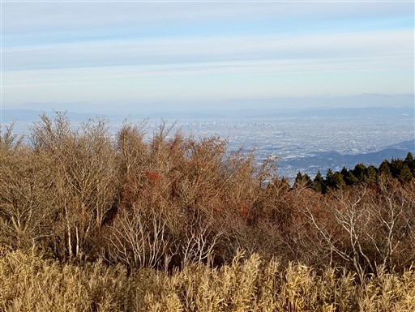
展望図が置かれているが、この絵を見てもどの山がどれかよく分からない。
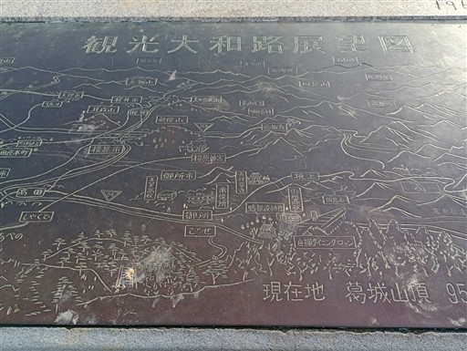
山頂で朝食のパンを1個食べる。太陽は出ているが雲が多く、ものすごく寒い。

寒いので休憩もほどほどに山頂を出発する。見えているのは和泉山脈の辺り。
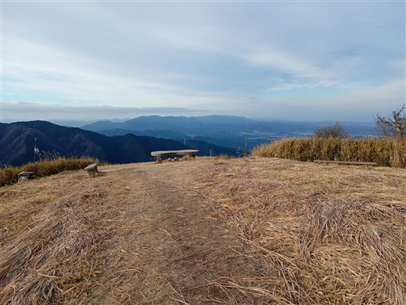
そして目の前に聳える金剛山。こちらより標高が高い。
思った以上にボリュームのある山だ。
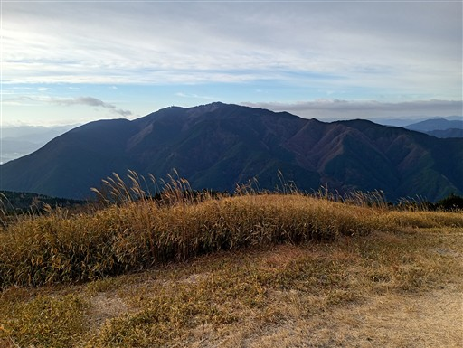
鐘があったので鳴らしていく。
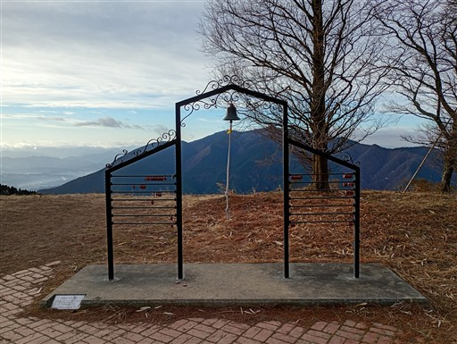
ここから下っていく道はダイヤモンドトレールと名付けられている。
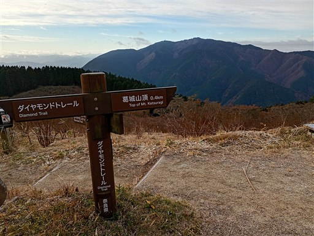
パラグライダー離陸場と思われる場所がある。
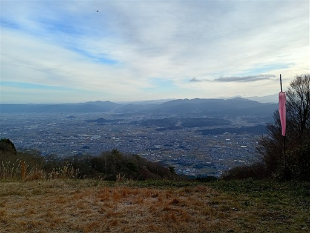
この道はとにかく階段が多い。一段一段が大きい階段が延々と続く。
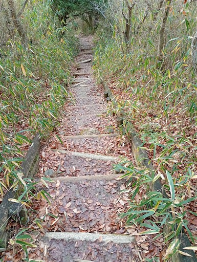
水越峠に下ってくる。路駐がたくさん見られる。
ここから大和葛城山や金剛山に向かっているのだろう。
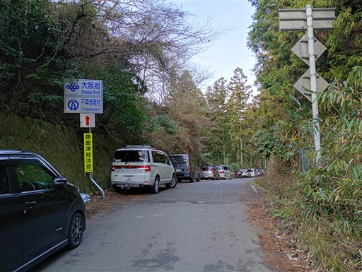
少し車道を歩いてフェンスの脇から林道に入る。
歩く人が多そうな道だが、標識の類はかなりお粗末だ。
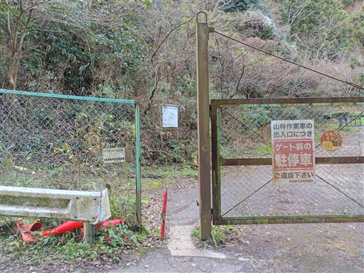
林道を歩いていく。不思議なことに大和葛城山～金剛山へ至る主稜線上に登山道は無く
この道を歩くか、車道を少し下ってから尾根道を登るかの選択肢しかない。
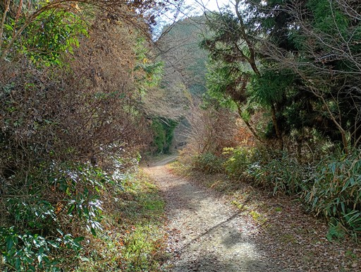
側を流れる沢の対岸に、小さな石仏を発見。
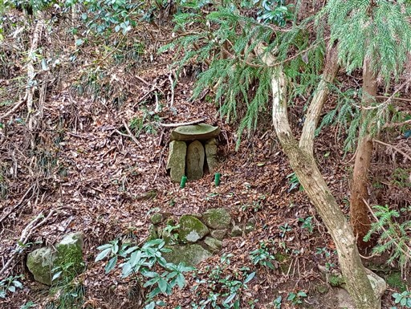
遭難碑。昭和59年で40年以上前のものだ。
こんな登山口から近い林道で遭難とは俄かには信じがたく、
調べてみたら昭和59年1月31日は記録が残る大雪だったようだ。
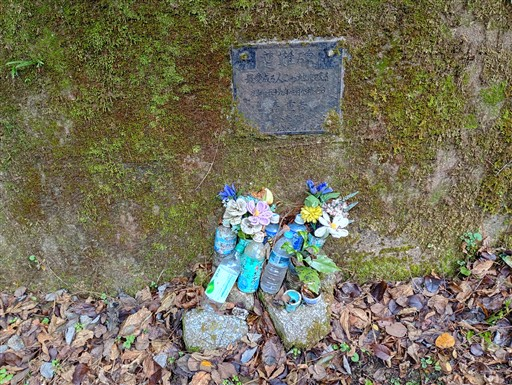
金剛の水。人が多い山で、この上にも登山道があることを考えると水質がちょっと心配だ。
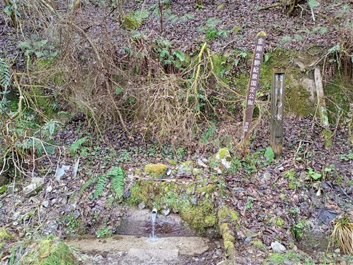
林道が終わり、ここから橋を渡って登山道になる。
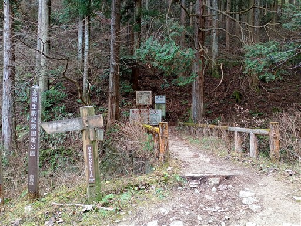
登り始めてすぐに、大きな東屋が現れる。
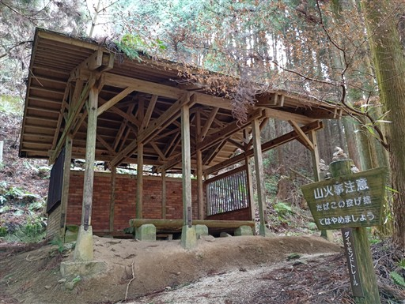
ヒノキの植林地帯の中の階段道が延々と続く。
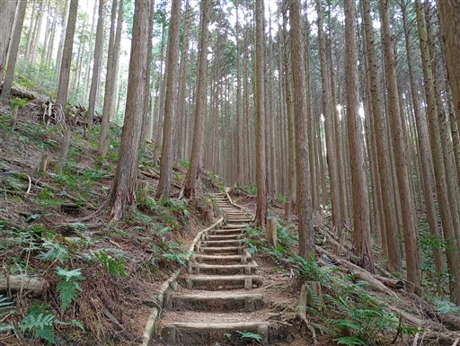
旧パノラマ台。旧とあるが、そこそこ展望が広がる。
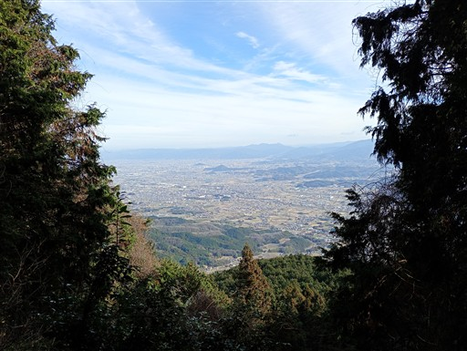
まだまだ続く階段道。ずっとこの景色だ。
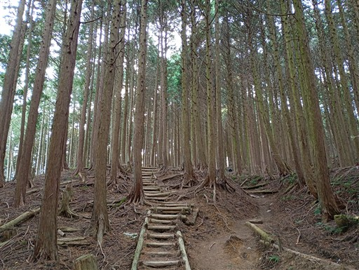
木の隙間から大和葛城山が見える。
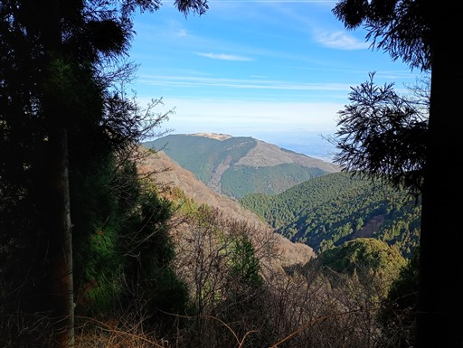
立派な道に出てくる。一の鳥居だ。
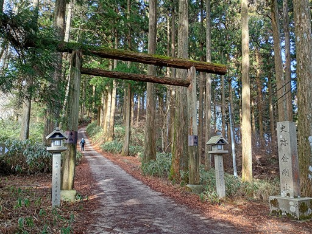
ここから先の道は石灯篭が並んでいる。
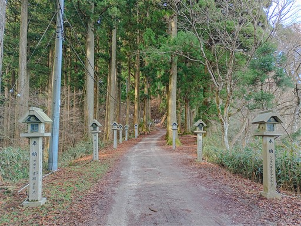
仁王杉。樹齢600年の立派な杉だ。
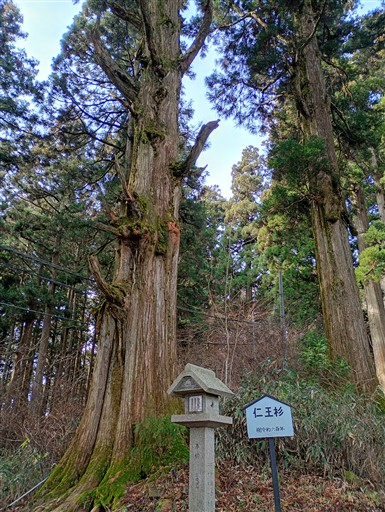
葛木神社に到着。
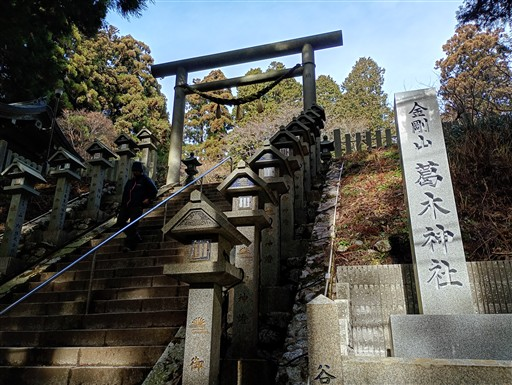
急な階段を登った先に葛木神社がある。
先ほど登った葛城山と葛木神社で字がちょっと異なるのが紛らわしい。
ここが金剛山の山頂だ。標高1125m。
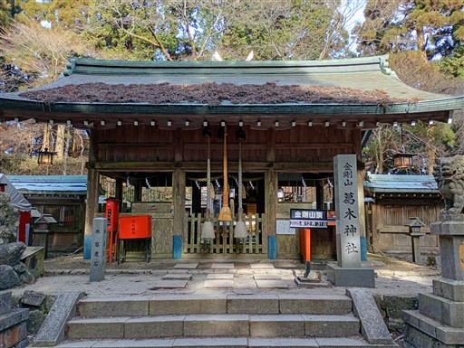
参拝を済ましたら、神社を後にして転法輪寺に向かう。
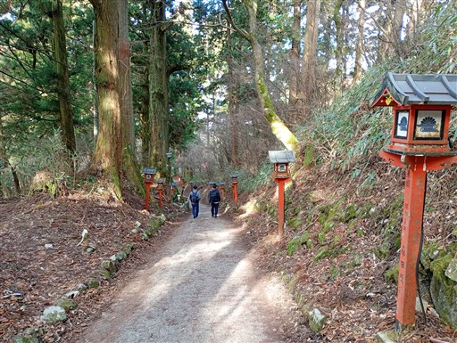
夫婦杉。かなり大きな杉だ。
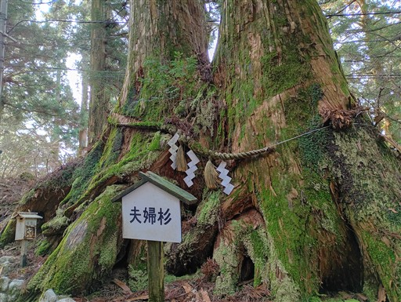
転法輪寺の本殿に到着。小振りな神社だ。
明治の神仏分離によって廃寺となり、葛木神社のみが残ったが
昭和25年に再興事業が始まり、現在に至るようだ。
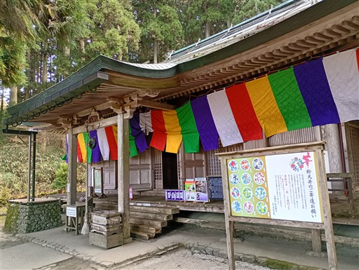
絵馬や護摩木をPayPayで買えるようになっている。これも時代だ。
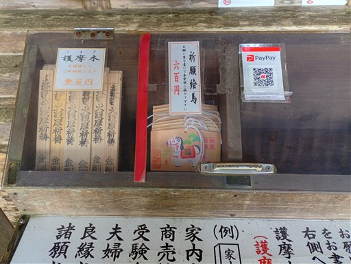
少し下った場所から。
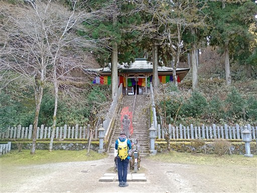
この辺りは建物が多く建っていて賑わっている。
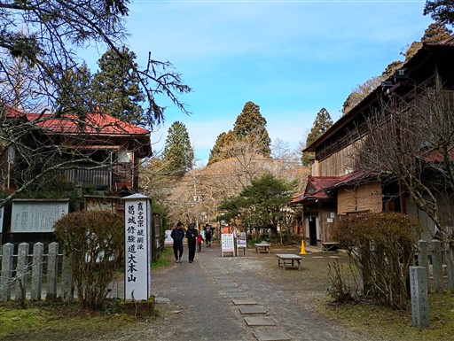
気温は0度。風があるのでものすごく寒い。
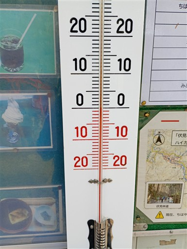
金剛山に200回以上登った人の名前が掲載されている。
ブランコと（壊れた）シーソーがあり、子供連れでもよく登られる山なのだろう。
広場で軽くおやつ休憩を取る。
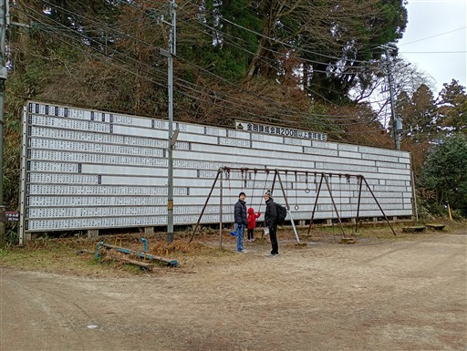
転法輪寺の先に、展望の広がる場所がある。ここに金剛山の山頂標識がある。
本日は快晴予報だったのだが、雲が多い。
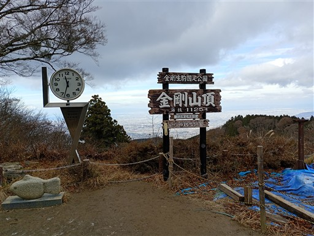
広場周辺の風景。大晦日だからか、あまり登山者は多くない。
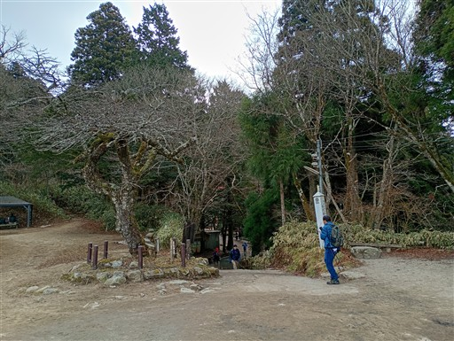
下山道の入口は細くて分かりにくい。建物の隙間を抜けていく。
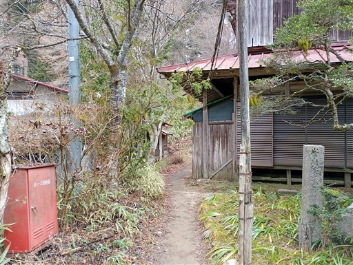
いくつかの分岐を見送り、尾根道になる。
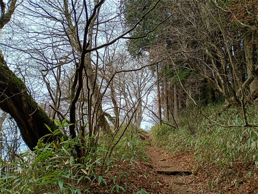
こちらも植林地帯が延々と続く登山道だ。
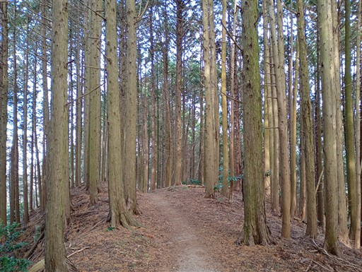
無事下山。ここを下ると駐車場はすぐだ。昼食を取ったら実家に向かう。
大和葛城山～金剛山は植林地帯がほとんどで、階段が多かったのがきつかった。
関東の陣馬山～高尾山を想像していたが、山の雰囲気はだいぶ異なっていた。
自然林の中をあまり歩けなかったのは残念だったが、
展望の葛城山と歴史ある金剛山をめぐって歩くことができ、充実した一日になった。